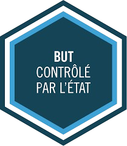

Proposer des applications informatiques optimisées en fonction de critères spécifiques : temps d'exécution, précision, consommation de ressources…
| Ressources S1 | R1.01 Initiation au dev. | R1.03 Intro. archi. | R1.06 Maths discrètes | R1.07 Outils fondamentaux | R1.12 PPP | S1.02 Comparaison d'algo |
|---|---|---|---|---|---|---|
| Coeff | 24.00 | 6.00 | 15.00 | 15.00 | 40.00 | |
| Ressources S2 | R2.01 Dev. objets | R2.04 Réseau & bas niveau | R2.07 Graphes | R2.09 Méthodes numériques | R2.14 PPP | S2.02 Exploration algo. |
| Coeff | 15.00 | 12.00 | 21.00 | 12.00 | 38.00 |